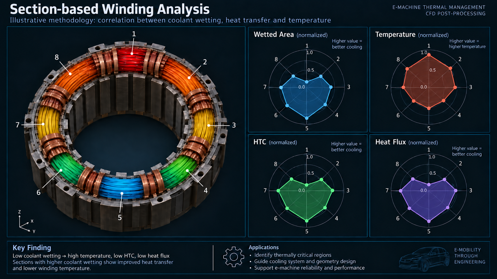

The problem
Non-uniform oil delivery can leave winding regions under-cooled. In the professional studies, changing rotation direction produced a temperature asymmetry that needed a physical explanation.
E-MOBILITY / MULTIPHASE FLOW / AUTOMATION
Oil flow rate alone does not tell us which winding regions receive effective cooling. This study follows the liquid through rotating hardware and shows how local analysis can guide the cooling design.
Alberto Brambila, PhD · Transient multiphase CFD, rotating flows, local performance analysis and Python/PyFluent automation.
The animation demonstrates oil–air flow with energy disabled. The thermal-analysis figure below is illustrative; the professional thermal studies used separate models and geometries.
PROFESSIONAL EXPERIENCE / ELECTRIC-MOTOR THERMAL MANAGEMENT
Non-uniform oil delivery can leave winding regions under-cooled. In the professional studies, changing rotation direction produced a temperature asymmetry that needed a physical explanation.
I developed and executed a staged workflow within the team: shaft flow, jet breakup, impingement mapping and thermal analysis. I compared winding sectors and operating points rather than relying on one average.
The analysis connected rotation direction with oil distribution and local heat removal. Sector-level HTC and heat-flux maps also supplied useful inputs to colleagues building system-level thermal models.
This public model illustrates part of that experience using simplified geometry. It does not reproduce customer hardware, the complete professional workflow or its quantitative results.
01 / FOLLOW THE LIQUID
The animation makes the flow path visible: rotating hardware carries and redistributes oil, while gravity, surface tension and wall interaction influence where it reaches the winding.
A specified oil inlet feeds the simplified assembly. Air and oil are tracked separately using implicit VOF.
A sliding interface connects rotating and stationary fluid regions. True mesh motion resolves the changing angular position.
A winding-surface report integrates oil volume fraction over area, complementing the visible oil isosurface.
Follow the cyan oil as the hardware rotates. Where does it first reach the copper-colored winding, and where does it leave? These are the flow mechanisms to examine before comparing cooling concepts.
A short transient illustrates oil delivery, not a settled thermal condition. Repeated video playback does not demonstrate periodic convergence or prove that every winding sector is adequately cooled.
The retained setup uses implicit oil–air VOF, a moving mesh at 3000 rpm, gravity, 0.028 N/m surface tension and a 45° wall contact angle. Energy is off. The reconstructed turbulence model is k–ω SST; the original settings independently establish only the k–ω family.
The time step is 5 × 10−5 s. The supplied context describes a 0.03 s visualization sequence, corresponding to 1.5 revolutions; the hero uses a shorter late-time loop. Playback at 20 fps is slowed for inspection.
The report computes ∫A αoil dA, in m². This volume-fraction-weighted area is different from counting faces above a wetting threshold. No numerical wetting history, thermal solution or mesh/time-independence study is asserted here.
02 / LOOK BEYOND THE AVERAGE
Dividing the winding into eight sectors helps identify local weaknesses that a global average can hide. The figure explains the analysis method used in the professional work.

Wetting measures liquid presence. It helps locate sectors needing a closer look at jet access, shielding or drainage.
HTC and heat flux add the thermal context. Good coverage alone may be insufficient if the arriving oil is already warm.
Compare local temperature and heat removal under consistent loading to focus geometry or oil-delivery changes where they matter.
The professional studies connected shaft flow and VOF-to-DPM jet breakup with droplet impingement mapping and longer-duration conjugate heat transfer. This separated fast liquid motion from the slower thermal response. Alberto developed and executed the methodology within a team; sole authorship of the coupling method is not claimed.
Sector-level post-processing compared wetting, HTC and heat flux across operating points and supplied data to system-modeling colleagues. The public scripts implement the flow-only VOF stage, not the droplet-to-thermal coupling.
The illustrated trend between wetting and temperature is a teaching example, not a universal law. In the professional work, some well-wetted sectors still removed little heat because they received preheated oil.
03 / MAKE PREPARATION REPEATABLE
Separate mesh and setup scripts turn a sequence of manual operations into inspectable configuration. Original workflow and settings records remain available for recovery.
Watertight Geometry, local body/face sizing, wall layers and polyhedral cells. The script preserves non-conformal regions for the sliding interface.
Materials, VOF, zone motion, interface pairing, boundary conditions, reports and visualization objects are created explicitly through PyFluent.
One useful check emerged during reconstruction: a stored share-topology option conflicted with non-conformal meshing. The driver disables the conflicting settings; the original WFT is preserved as a reference.
The previous development record describes live checks of task creation, zone types, interface matching and report evaluation. This portfolio integration reviewed the retained code and notes; it did not rerun Fluent.
The mesh driver uses 0.3–3.5 mm surface sizing, local 0.3/0.4 mm refinements and a 3.21 mm maximum volume size. Prior notes report approximately 4.45 million rebuilt cells versus 4.29 million in the reference. Similar cell counts are not a mesh-independence test.
The solver driver performs hybrid initialization for report/display checks and writes the setup case. It does not run the transient campaign. No measured time saving, automated operating-matrix execution or thermal validation is claimed for these scripts.
04 / EXPERIENCE THAT TRANSFERS
The transferable capability is connecting the right physical model, a local engineering measurement and an efficient workflow.
Resolve liquid delivery, free surfaces and moving hardware. Relevant to lubrication, rotating equipment and oil-cooled systems.
See the flow model ↑Use sector-level metrics to ask where cooling falls short. The professional work links CFD fields to thermal design and system-model inputs.
See the analysis method ↑Expose configuration in Python, reconstruct model objects and retain original references so preparation can be repeated and inspected.
See the drivers ↑Distinguish liquid contact from heat removal, a short transient from a settled result, and an illustrative plot from simulation evidence.
See the interpretation ↑Selected engineering visuals are public. CAD, Python scripts, detailed settings and workflow records are maintained privately.